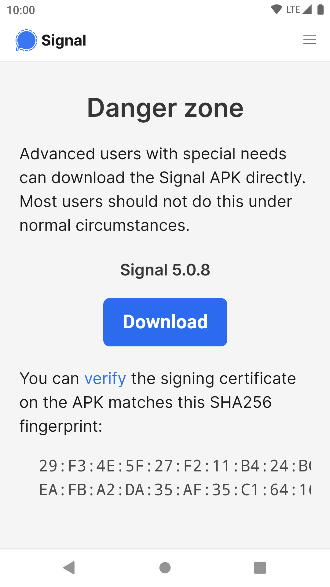
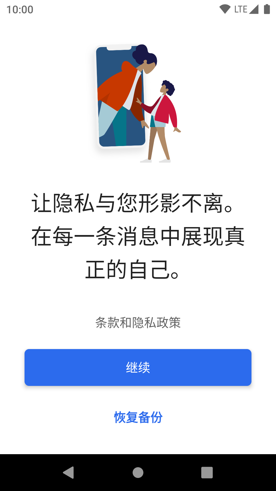
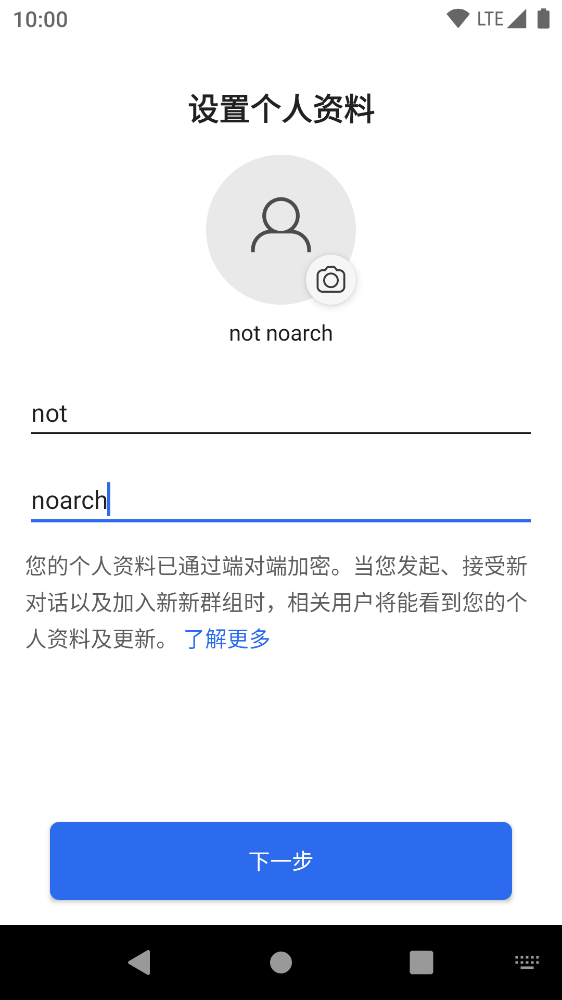
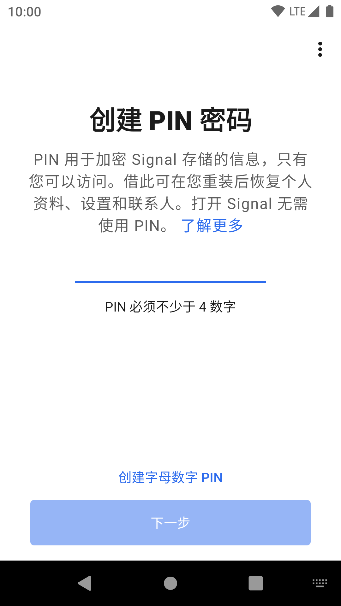
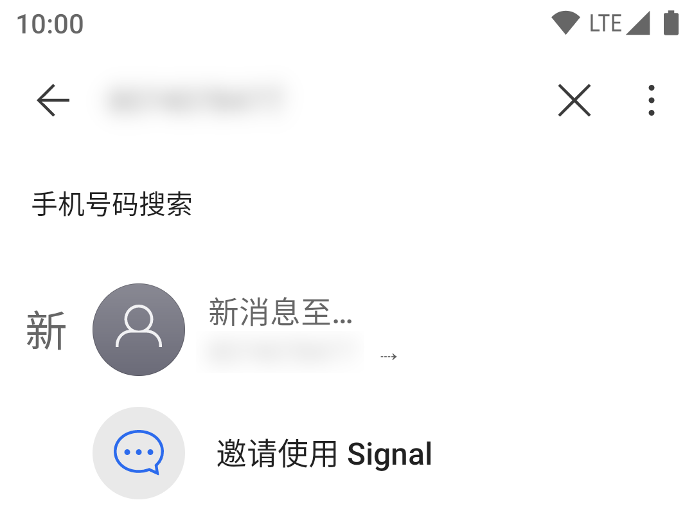
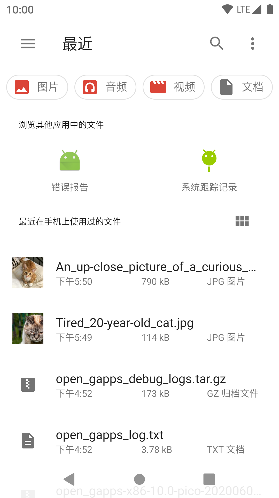
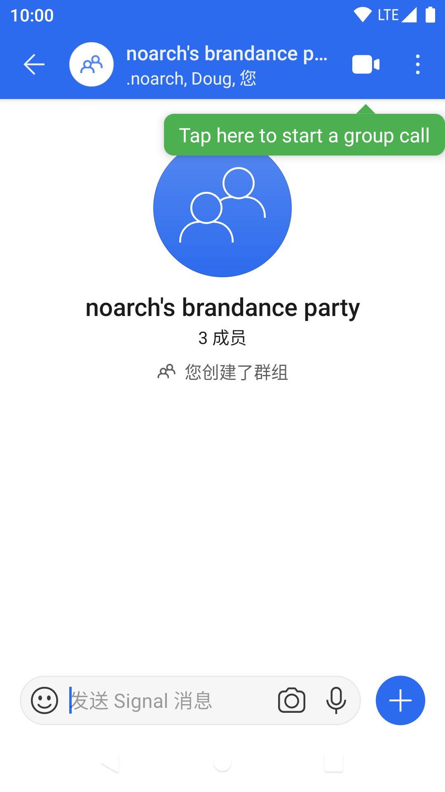
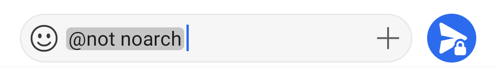
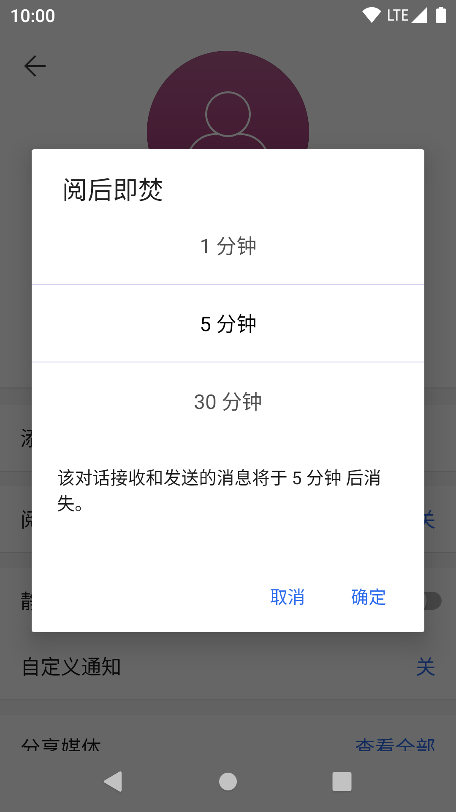
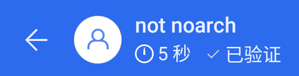

[Android] Signal
{kind=link}
Signal - 暢所欲言。
一款強制端到端加密，以手機號作為識別碼的非匿名即時通訊。
開發者：Signal Foundation | 官方網站 | 原始碼
客戶端 GPLv3, 服務端 AGPLv3 | 服務條款與隱私政策
簡介
你用過蘋果裝置嗎？
如果用過，你應該熟悉蘋果的 iMessage. 或者如果你沒聽說過 iMessage, 你應該注意到了，在給同樣使用蘋果裝置的朋友發簡訊時，能使用一些有趣的功能。
不過 noarch 要介紹的不是 iMessage, 而是想與 iMessage 競爭，並且使用體驗可以和 iMessage 很像的 Signal.
與 iMessage 不同的是，Signal 不需要一臺蘋果裝置，並且端到端加密。
除此之外，它的客戶端和服務端都完全自由，沒有廣告和追蹤器，最重要的是 - 它永久免費，並且全靠捐款運作。
手機號即是帳號
如果你在手機流行之前用過 QQ, 那麼你應該對“交換 QQ 號”這件事印象深刻。在那時，QQ 只是一個獨立的網上身份，在技術上不與你的任何其他身份相關聯。
雖然 QQ 現在註冊需要實名手機號，但它的背後工作原理依然需要一個獨立的 QQ 號。noarch 認為這是大多數中國人對“即時通訊”概念的認識。
如果你是 noarch 上述的“大多數”，在使用 Signal 前，你需要完全拋棄以前對即時通訊的認識。
Signal 致力於提供一個像簡訊一樣的使用體驗，這也意味著你的手機號是唯一識別碼：除非你專門遮蔽，否則任何知道你手機號的人都可給你發訊息；你也無法在更換手機號時遷移你的帳號。
威脅模型
noarch 在最上方的一覽中提到了 Signal 目前不提供匿名功能，任何與你聊天的人將能看到你的手機號。
這也註定了 Signal 無法被當作 Telegram 或 Matrix 等更加匿名的即時通訊使用 - 在中國，你需要更多的是匿名性；而 Signal 完全沒有提供匿名性。看到你的中國手機號意味著能直接看到你的真實身份：警察可以直接通過手機號查出你的戶籍，而其他人則可以通過賄賂警察或使用洩露的資料庫達到此效果。
所以，為什麼還使用 Signal 呢？
-
首先，雖然 Signal 不匿名，但你依然可以用它和已經認識且非常親密的人通訊。
- 家人，以及現實中的朋友已經知道你的真實身份，所以你也不需要在線上為他們隱藏你的身份。
-
其次，如果你不在中國大陸或其它限制匿名上網的國家，那麼 Signal 不匿名這點應該對你沒啥影響。
- 這是因為你的手機號實名性不強 - 敵人通過你的手機號找出你真實身份將沒有那麼容易。
-
最後，Signal 的易用性無法比擬。
- noarch 認為 Signal 的設計目標是取代傳統簡訊，沒有複雜功能，這使得它非常簡單易用。
- 包括以手機號識別身份這點，Signal 的諸多操作邏輯都與傳統短彩信一樣。
Signal 與 Google 服務
noarch 注意到了 Signal 的 Android 版依賴 Google 服務框架進行推送通知。
Signal 在其開發初期需要 Google 服務框架才能執行。這是因為嚴格上 Android 應用需要 Google 框架來推送通知，及時送達訊息。沒有了 Google 服務框架提供的推送通知服務，Signal 需要長期保持後臺執行並維持一個 WebSocket 開放以推送訊息，而 Android 是禁止這麼做的。
從2017年2月起，Signal 不再要求 Google 服務框架才能啟動；在此之後，如果你沒有 Google 服務框架，Signal 會向你傳送通知，告訴你如果沒有 Google 服務框架 Signal 可能會被殺死後臺而無法及時接收訊息。
關於 Google 服務框架及其替代，請看這裡。
準備好了嗎？
除了上述弊端，Signal 在 noarch 看來是目前最容易上手的端到端加密通訊工具。
瞭解了上面的弊端和威脅模型，並將其牢記在心後，你就可以和 noarch 一起開始使用 Signal 了！
安裝
Signal 和其它 Android 應用的安裝沒啥區別：Signal 官方提供了兩個渠道，其中一個是 Google Play, 另一個則是直接通過 apk 安裝。
如果你有 Google Play, 你可以直接去那裡安裝，然後跳到下一步；下面 noarch 將假設你沒有 Google Play, 並且使用 apk 安裝。
首先，在瀏覽器內開啟 Signal 的 apk 下載頁 https://signal.org/android/apk/.
滑動到下方，你可以看到 Danger Zone 以及一個 "Download" 按鈕。
與從 Google Play 安裝應用不同，直接從 Signal 官網下載
apk雖然經過 HTTPS 傳輸，但沒有簽名驗證；這也是 Signal 不建議你直接安裝apk的原因。noarch 在此為了簡潔，不驗證 Signal
apk簽名。如果你覺得基礎設施攻擊是你的威脅之一，你可以選擇從 Google Play 安裝或手動驗證簽名。更多關於簽名驗證的知識，請看這篇來自 Qubes OS 的文章。
點選 "Download", 瀏覽器提示你下載或直接開始下載 Signal apk. 下載完成之後安裝：
如果你的裝置提示“出於安全考慮，已禁止您的裝置安裝來自此來源的未知應用”，請點選“設定”並允許來自你瀏覽器的未知來源應用安裝。
請在允許未知來源之前確認要安裝的應用是否的確是你要的！在 noarch 的例子裡，請確認來源是 Bromite（瀏覽器），並且要安裝的應用是 Signal.

等待片刻，安裝完成後“開啟”。
註冊帳號
你現在進入了 Signal 的歡迎頁：
點選“繼續”，Signal 會向你請求 通訊錄許可權。
Signal 不會以任何形式上傳你的通訊錄，但會使用它在本地識別聯絡人；允許 Signal 讀取通訊錄與否，取決於你要不要將 Signal 替代裝置自帶簡訊應用。
noarch 在本章裡不將 Signal 替換裝置自帶簡訊應用，因此 noarch 點選“稍後再說”拒絕了 Signal 的通訊錄請求。

現在 Signal 需要你的手機號以註冊帳號。noarch 在這裡使用的是虛擬手機號，但你也可以使用真實手機號。
如果你使用真實的 +86 手機號，請絕對只和最親密的人使用 Signal.

下一步，Signal 會向你傳送一條簡訊驗證碼。
如果你收不到簡訊驗證碼，你可以等一段時間，然後向 Signal 請求電話驗證碼。


驗證完成後，就是填寫個人資訊的時間了。必填項只有“名字”，但你也可以選個頭像和“姓氏”。
noarch 注意到眾多中國使用者在牆內及時通訊使用假名，卻在牆外使用真名；這和例如 Signal 的牆外及時通訊在輸入框內指示“名字”和“姓氏”不無關係。
儘管 Signal 叫你這麼填，但你依然可以只填寫一個假名。noarch 也建議你使用牆內從未使用過的假名，並且不用自己的臉做頭像。
配置 Signal 的最後一步是設一個 PIN. 它用來加密 Signal 的本地儲存，防止裝置落入竊賊或警察手中時 Signal 訊息被輕易讀取。
絕對不要忘記這個 PIN! 如果你忘了它，所有歷史訊息將無法找回。
如果你：
- 獲取了裝置
root許可權- 被迫使用華為，或任何具有
/data訪問後門的裝置- 大概率會被取證工具檢查裝置
請“建立字母數字 PIN”，並結合密碼管理器生成的強密碼使用 Signal. 這能更有效防止儲存在本地的 Signal 訊息被暴力破解。
建立完 PIN, 點選“下一步”，一個全新的聊天體驗在等著你。
額外配置
Signal 主要為傳統的簡訊使用習慣而設計，然而這些設計可能不符合你的使用習慣。
因此，noarch 總結了一些你可以在進入 Signal 後進行的隱私和使用習慣配置：
不將 Signal 設定為預設簡訊應用
點 關掉主介面“設定為預設簡訊應用”橫幅即可。
禁用 PIN 碼提醒
Signal 會定期提醒你輸入 PIN 碼以防你忘記。
如果你使用了密碼管理器 + 混合密碼，“提醒”你輸入密碼就完全沒意義了；因此你可以將 PIN 提醒關掉。
從主介面開始，進入 -> 設定 -> 隱私，在底部取消選擇 "PIN 提醒"，再確認一次 PIN 就可以關掉這個提醒。

其它隱私設定
在 Signal -> 設定 -> 隱私 裡，還有一些選項你可能想要修改：
-
鎖屏：開
類似諸多“應用鎖”，用於在手機解鎖時都鎖定 Signal
-
隱身鍵盤：開
禁用鍵盤“雲輸入”以及自動學習，類似密碼輸入模式
-
總是轉發通話：開
防止在通話時洩露真實 IP 地址
-
已讀回執：關
關閉後，對方的訊息只會在你回訊息時被標記為“已讀”，類似大多數中國即時通訊
-
註冊鎖定：開
如果你的裝置被沒收或被盜，開啟這個選項可以給你更多時間通知朋友“不要再往該帳號發訊息”
當你 將 Signal 變成你的形狀 後，就來找一個朋友換到 Signal 聊天吧！
邀請第一個朋友上 Signal
現在，你可以把本章節轉發給你的朋友，讓他們也開始使用 Signal 了。當他們也開始使用 Signal, 下面 noarch 將教你如何開始一個聊天。
noarch 前面提到了 Signal 的操作邏輯和簡訊類似；這點從開始聊天時就能體驗到。
例如，如果你要和一個人開始聊天，你只需要輸入它們的手機號，然後傳送訊息即可；對方在收到你第一條訊息後可以選擇是否遮蔽你，但全程沒有獨立的“好友驗證”過程。
要找一個朋友開始聊天，在主介面點選右下角的 ，你會進入像簡訊一樣的“選擇收件人”介面。
Signal 在這裡又會向你請求通訊錄許可權；noarch 在這裡選擇拒絕。
如果你沒有允許 Signal 讀取聯絡人，你需要輸入對方的完整手機號。在你輸入的同時，輸入框下方的列表中會出現“新訊息至...”，點選它即可進入聊天介面。
如果對方的手機號不屬於美國或加拿大，你還需要手動加上區號，例如
+86 17727378899

現在這個聊天介面是灰色的，代表你們以前沒有用 Signal 通訊過；當你發出第一條訊息，它會變成彩色。在 noarch 的例子裡，當我發出第一條訊息，聊天介面變成了粉色 (yay!)

作為一個模仿簡訊體驗的即時通訊，你發出的第一條訊息就是“好友請求”。對方在收到你的第一條訊息之後，可以像其它及時通訊的好友請求一樣允許，忽略（刪除）和拒絕（拉黑）：
在對方點選“接受”之後，你們就可以像其它及時通訊一樣聊天了！
如果你在理解圖示上有困難，下面是 Signal 聊天介面各種圖示的解釋：

發語音
在 Signal 聊天介面，按住 可以發語音。

如果你口誤了，可以原地向左滑動取消語音錄製；
如果你想錄一首鋼琴曲，原地上劃可以鎖定語音錄製狀態，然後把手機放到鋼琴上即可，不用一直按著錄製鍵；
錄完之後，鬆手即可傳送；或者如果你在鎖定模式，點選 來發送。
傳送媒體檔案
Signal 作為一個及時通訊，同樣可以傳送視訊和圖片。
你可以點選訊息框右側的 來開啟媒體選擇選單：
第一次開啟時，Signal 會請求儲存許可權；點選“給予許可權”並在彈出的許可權請求中允許即可。

點選你要傳送的媒體（可以是圖片、GIF 或是視訊），會根據對應媒體格式進入編輯器。
在圖片編輯器裡，你可以給剪裁圖片、加文字、寫寫畫畫、打碼甚至貼上貼紙；在視訊編輯器裡你可以粗略地剪輯視訊。
剪輯完成後點選右下角的 來發送。

多選媒體
點選 號調出的圖片選擇器只能選擇一張圖片併發送。如果你要一次性發一堆照片，剛才的方法就很麻煩。
還好 Signal 提供了照片多選功能。
在 號圖片選擇器中點選“相簿”，你會進入一個資料夾檢視：
你也可以點選圖片編輯器下方圖片列表最右側的 號進入資料夾檢視。

進入你要傳送的圖片所在資料夾（或是直接進入“全部媒體”），然後點選對應圖片來選擇。

選中的圖片會以一個帶數字的圓圈表示，數字代表圖片傳送順序。
選擇完之後，點選 就能進入你熟悉的圖片編輯器；在圖片編輯器裡點相同位置的 就可以一次性發送多個媒體。
發原圖（或檔案）
Signal 傳送原圖不會去除圖片中可能敏感的 EXIF 資訊。不知道這麼做的風險可能使你洩露自己的地理位置、裝置型號，還有更多資訊。
Signal 預設壓縮傳送的圖片，並會去除圖片中可能洩露隱私的 EXIF 資訊。
但有時候你需要傳送原圖，以保證傳送圖片的質量。
Signal 沒有專門的“發原圖”功能，但你可以將圖片以“檔案”形式傳送，這樣 Signal 就不會以任何形式處理圖片。
在聊天介面 號選單點選 檔案，你會被帶到熟悉的 Android 檔案選擇器。
如果你安裝了多個檔案管理器，Android 會問你要使用哪個。
在檔案管理器裡選擇你要傳送的檔案（只能選擇一個），然後點選“選擇”回到 Signal 聊天介面。

在聊天介面下方，你會看到剛才選中的檔案，讓你確認即將傳送的檔案；確認無誤後即可傳送。

有趣的是，儘管 Signal 不提供方便的無損圖片傳送，你卻能預覽傳送出去和收到的無損圖片。
群聊
如果你要把一家人都拉進 Signal, 那麼群聊則是你的首選。雖然 Signal 群聊在社交功能上不及一些其它社交為主的即時通訊，但作為只與緊密朋友聯絡的工具，Signal 群聊做得也不錯。
建立群聊和開始新對話的入口一致，都是主介面右下角的 號。不同的是，在進入新建對話介面後你點選“ 新建群組”：

然後選擇，或是挨個新增想要拉到群裡的人，按 繼續然後輸入群資訊：

最後“建立”就建立了一個新群。
@ 重要通知
像很多其它即時通訊一樣，Signal 沒有專門的 @ 按鈕；
如果你要 @ 一個人，直接用鍵盤輸入 @, Signal 就會彈出一個搜尋選單。

繼續輸入你要 @ 的使用者名稱，找到目標，點選就可以將特別通知新增到訊息裡。
到此，noarch 已經介紹了 Signal 的所有核心功能和你一定要進行的隱私設定，剩下的功能你可以自己探索！
附加功能
如果你懶得自己探索所有 Signal 的好玩功能，那麼 noarch 在這裡列出一些給你吧。
“回覆”訊息
在一個訊息身上向右滑動可以“回覆”。它在群裡尤其有用，“回覆”一個訊息和 @ 一樣可以特別提醒一個人。

除了充當 @ 的功能之外，“回覆”還可以幫你和朋友緊貼話題，避免出現誤解。
端到端加密通話
還記得 noarch 在章節開頭叫你設定的“總是轉發通話”嗎？沒錯，你可以用 Signal 打電話。
除了不消耗通話分鐘數以外，Signal 在其網路電話中也使用了端到端加密，意味著你的通話幾乎不可能被竊聽。
在聊天介面點選 打電話，你會被帶到通話介面。
Signal 的通話介面長這樣：
在聊天介面點選 則可以直接打視訊電話，不過你可以隨意在視訊和語音電話之間切換。
除此之外，Signal 還可以打群電話；打群電話的操作流程和私聊電話相似。不過，因為 Signal 的群通話不會通知成員，在開始群通話之前你需要事先通知群成員。
閱後即焚
請不要依賴 Signal 閱後即焚功能說出可能會後悔的話。雖然訊息本身閱後即焚，但聊天另一方可以通過其它方式記錄訊息。
得益於端到端加密，Signal 的訊息可以定時自毀。
點選聊天介面右上角的 ，然後選擇“閱後即焚”；或者點選對方頭像進入個人資訊頁，那裡也有“閱後即焚”選項。
Signal 會彈出一個定時器，你可以在這設定訊息在閱讀後多久自動消失。
設定定時器後，對方頭像下方的狀態會顯示閱後即焚定時器。如果你這時發一條訊息，它會在定時器過後消失。
你可以重複上述步驟，進入閱後即焚定時器，將其設定為“關閉”來回到“正常”模式。
驗證安全碼
如果你看過 privacy.noarch 的“公鑰加密簡介”章節，你看到這應該一直有一個疑惑：“作為一個端到端加密聊天工具，為什麼 Signal 不需要驗證公鑰指紋？”
答案是，你其實可以手動驗證公鑰指紋。
在聊天介面點選對方頭像檢視對方個人資訊，然後滑動到底部，“檢視安全碼”。

熟悉的公鑰驗證步驟來了：你現在可以和對方面對面驗證安全碼，或是用一個不同方式與對方核對安全碼。
總結
上面 noarch 介紹了 Signal 的常見用法。現在，即使你不太會用其它及時通訊，也應該對 Signal 的操作比較熟悉了。
光看無用，現在去把自己的三次元朋友拉到 Signal 上吧！
記住，與你加密通訊的人越多，你的隱私在巨集觀上就越安全。